import matplotlib.pyplot as plt15 Data Visualization in Python
Data visualization is a crucial aspect of data analysis that enables the understanding and interpretation of data through graphical representation. It allows us to observe trends, patterns, and outliers in data that might not be evident in raw numerical forms. In Python, there are several powerful libraries for creating visualizations, with Matplotlib, ggplot, and Seaborn being among the most popular. This section will introduce these libraries and demonstrate how to create a variety of plots to explore and present data effectively.
15.1 Introduction to Matplotlib
Matplotlib is a comprehensive library for creating static, animated, and interactive visualizations in Python. It is often the first choice for many data scientists and analysts due to its flexibility and the detailed control it offers over plots. Matplotlib is organized into several components, with the pyplot module being the most commonly used. This module provides a MATLAB-like interface that simplifies the process of creating and customizing plots.
15.1.1 Creating Basic Plots with Matplotlib
The most fundamental plot in Matplotlib is the line plot, which is typically used to visualize trends over time or continuous data. To get started with plotting in Matplotlib, you need to import the pyplot module:
Example: Plotting a Simple Line Graph
# Data for plotting
x = [1, 2, 3, 4, 5]
y = [1, 4, 9, 16, 25]
# Creating a line plot
plt.plot(x, y)
plt.xlabel('X-axis label')
plt.ylabel('Y-axis label')
plt.title('Simple Line Plot')
plt.grid(True) # Adds a grid to the plot
plt.show()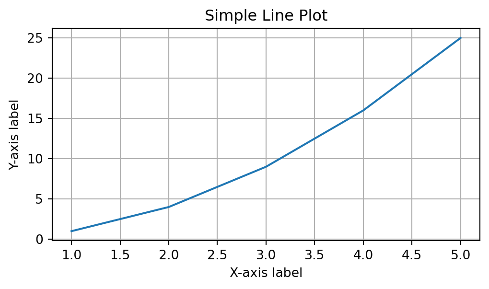
This example creates a simple line plot with labeled axes, a title, and a grid. The method plt.show() is used to render the plot.
15.1.2 Types of Plots in Matplotlib
Matplotlib supports a wide variety of plot types beyond simple line graphs. Some of the most commonly used plot types include:
- Scatter Plots: Useful for exploring relationships between two variables.
- Bar Charts: Ideal for comparing discrete categories.
- Histograms: Commonly used to display the distribution of data.
- Pie Charts: Used to show proportions of a whole.
- Box Plots: Effective for visualizing the spread and outliers of data.
Example: Creating a Scatter Plot
# Data for scatter plot
x = [5, 7, 8, 5, 9, 7]
y = [3, 8, 4, 7, 2, 5]
# Creating the scatter plot
plt.scatter(x, y, color='blue', marker='^')
plt.xlabel('X-axis label')
plt.ylabel('Y-axis label')
plt.title('Scatter Plot Example')
plt.show()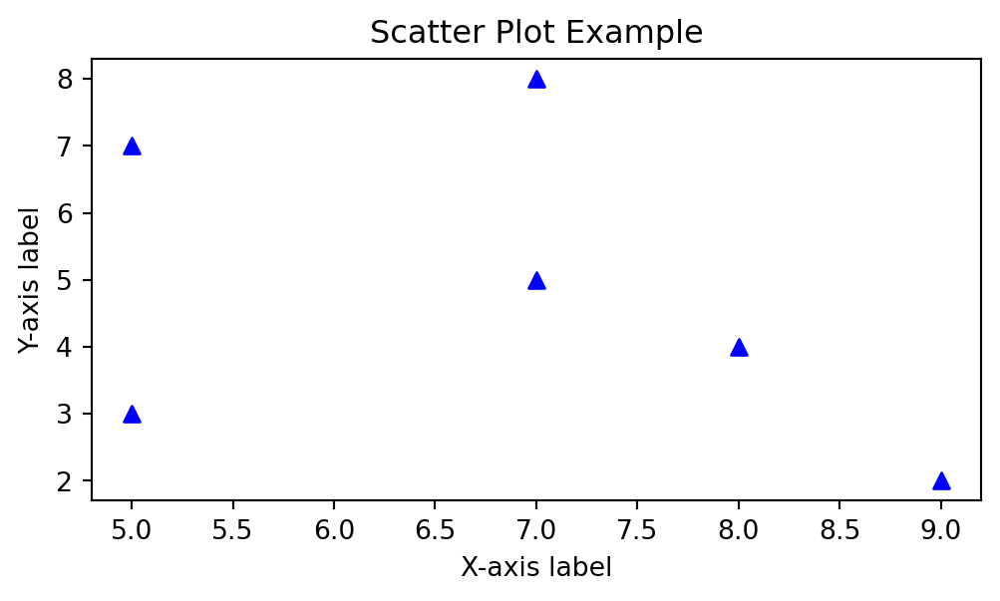
In this example, we use plt.scatter() to create a scatter plot, where the color and marker style of the points can be easily customized.
15.1.3 Customizing Plots in Matplotlib
Customization is one of Matplotlib’s greatest strengths. You can modify almost every aspect of a plot, including colors, line styles, markers, axis scales, legends, and more. This flexibility allows you to create publication-quality visualizations.
Example: Customizing a Line Plot
# Customizing the line plot
plt.plot(x, y, color='red', linestyle='--', linewidth=2, marker='o', markersize=8, markerfacecolor='yellow')
plt.xlabel('X-axis label')
plt.ylabel('Y-axis label')
plt.title('Customized Line Plot')
plt.grid(True)
plt.show()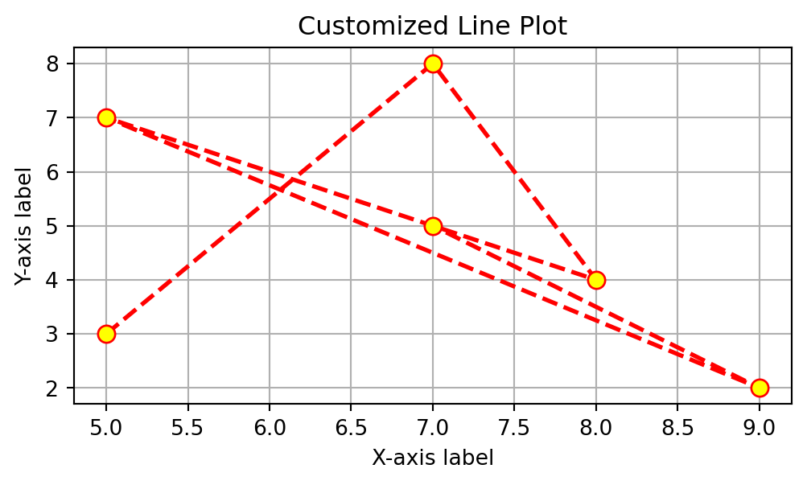
In this example, we modify the line style to be dashed (--), set the line color to red, increase the line width, and customize the marker appearance with size and color adjustments.
15.1.4 Adding Annotations and Legends
Annotations and legends can significantly enhance the interpretability of your plots. Annotations allow you to highlight specific data points or trends, while legends help distinguish different datasets in a multi-line plot.
Example: Adding a Legend and Annotations
# Data for multiple lines
x = [1, 2, 3, 4, 5]
y1 = [1, 4, 9, 16, 25]
y2 = [2, 3, 4, 5, 6]
# Plotting multiple lines
plt.plot(x, y1, label='Dataset 1', color='blue')
plt.plot(x, y2, label='Dataset 2', color='green')
# Adding an annotation
plt.annotate('Intersection', xy=(3, 9), xytext=(4, 15),
arrowprops=dict(facecolor='black', shrink=0.05))
# Customizing plot
plt.xlabel('X-axis label')
plt.ylabel('Y-axis label')
plt.title('Annotated Plot with Legend')
plt.legend(loc='upper left')
plt.grid(True)
plt.show()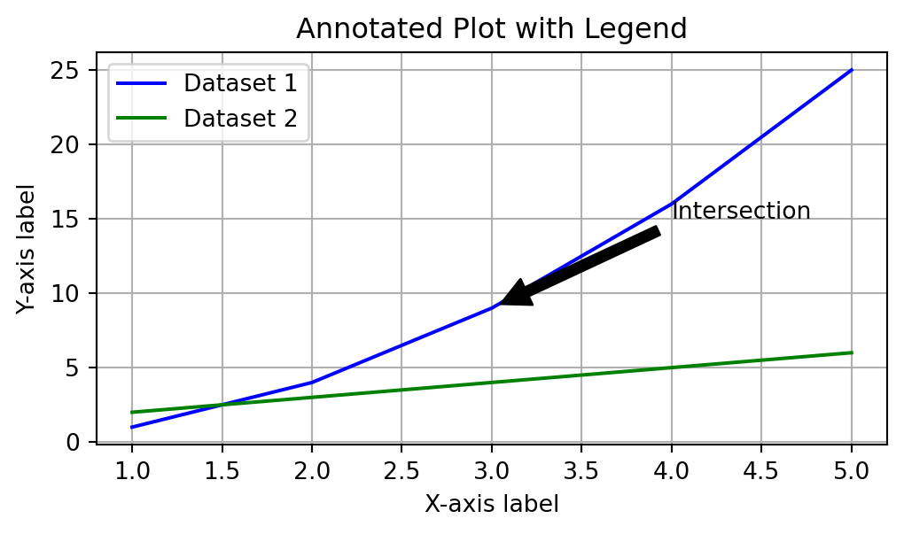
This example demonstrates how to use the annotate() function to add a text label to a specific point on the plot, along with an arrow pointing to that location. The legend() function is used to add a legend that describes the different lines in the plot.
15.1.5 Working with Subplots
Subplots allow you to create multiple plots in a single figure, making it easier to compare different visualizations side by side.
Example: Creating Subplots
# Creating a figure with 2 rows and 1 column of subplots
fig, axs = plt.subplots(2, 1, figsize=(6, 8))
# First subplot
axs[0].plot(x, y1, color='blue')
axs[0].set_title('Line Plot 1')
axs[0].set_xlabel('X-axis')
axs[0].set_ylabel('Y-axis')
# Second subplot
axs[1].scatter(x, y2, color='green')
axs[1].set_title('Scatter Plot 2')
axs[1].set_xlabel('X-axis')
axs[1].set_ylabel('Y-axis')
# Display the plots
plt.tight_layout() # Adjusts spacing between subplots
plt.show()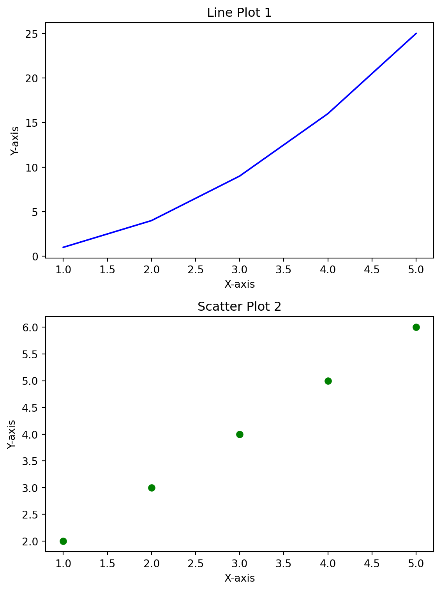
This example uses the subplots() function to create a figure with two subplots arranged in a column. Each subplot is customized with its own title, labels, and data.
15.1.6 Styling and Themes in Matplotlib
Matplotlib offers several built-in styles that can be applied to your plots to give them a consistent and visually appealing look. Styles can be easily switched using the plt.style.use() function.
Example: Using Different Styles
# Applying a style to the plot
plt.style.use('ggplot')
# Replotting the data with the new style
plt.plot(x, y1, color='red', linestyle='-', marker='o')
plt.title('Styled Plot with ggplot Theme')
plt.xlabel('X-axis')
plt.ylabel('Y-axis')
plt.show()
# Reset to the default style
plt.style.use('default')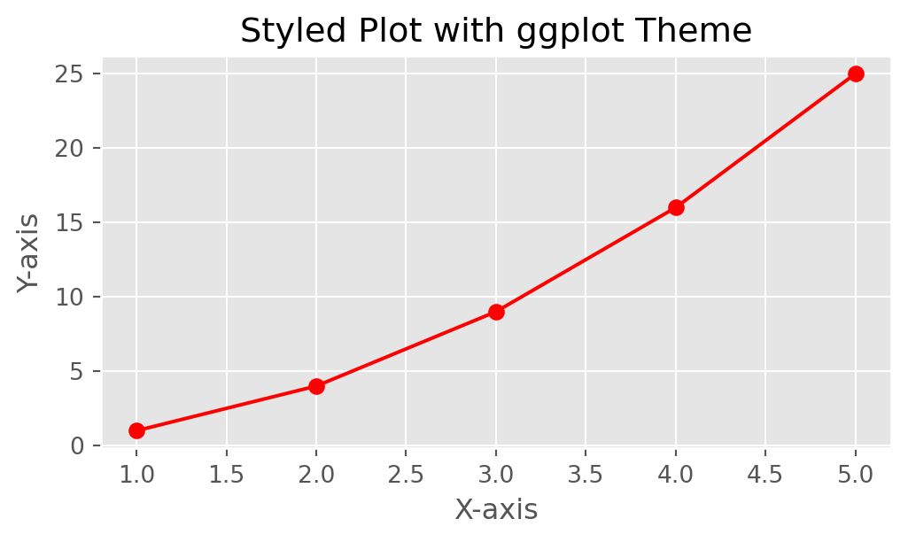
In this example, we apply the ggplot style to the plot, which gives it a different color scheme and grid design inspired by the aesthetics of the ggplot2 package in R.
15.1.7 Saving Plots to Files
Once you’ve created your visualizations, you might want to save them as image files for use in presentations or publications.
Example: Saving a Plot
# Saving the plot to a file
plt.plot(x, y1, color='blue', linestyle='--')
plt.title('Plot to be Saved')
plt.savefig('my_plot.png', dpi=300, bbox_inches='tight')The savefig() function saves the plot as a PNG file with high resolution (specified by dpi=300) and tight bounding boxes to remove excess whitespace.
15.1.8 Common Pitfalls and Best Practices
- Aspect Ratio: Always check the aspect ratio of your plots to ensure they are not distorted.
- Labels and Titles: Make sure to label all axes and include a title to provide context to the visualization.
- Color Blindness: Use color palettes that are accessible to those with color vision deficiencies.
- Legend Placement: Place legends in a position that does not overlap with important data points.
Understanding how to leverage the power of Matplotlib will enable you to create informative and professional-quality data visualizations, enhancing your ability to communicate data-driven insights.
15.2 Introduction to Seaborn
Seaborn is a powerful Python visualization library built on top of Matplotlib, designed specifically for creating informative and attractive statistical graphics. It provides a high-level interface for drawing a variety of statistical plots and integrates seamlessly with data structures like Pandas DataFrames. Seaborn’s design philosophy emphasizes the importance of aesthetics, making it easy to generate complex visualizations with concise code.
15.2.1 Getting Started with Seaborn
To use Seaborn, you first need to import the library. If you haven’t already installed it, you can do so using the following command:
!pip install seabornOnce installed, import Seaborn into your Python environment:
import seaborn as sns
import matplotlib.pyplot as plt15.2.2 Creating Basic Plots with Seaborn
Seaborn simplifies the process of creating plots by offering specific functions for different types of statistical visualizations. Some of the most commonly used plot types include scatter plots, line plots, histograms, and bar charts.
Example: Creating a Scatter Plot
# Sample data
tips = sns.load_dataset('tips')
# Creating a scatter plot
sns.scatterplot(x='total_bill', y='tip', data=tips)
plt.title('Scatter Plot of Total Bill vs. Tip')
plt.xlabel('Total Bill')
plt.ylabel('Tip')
plt.show()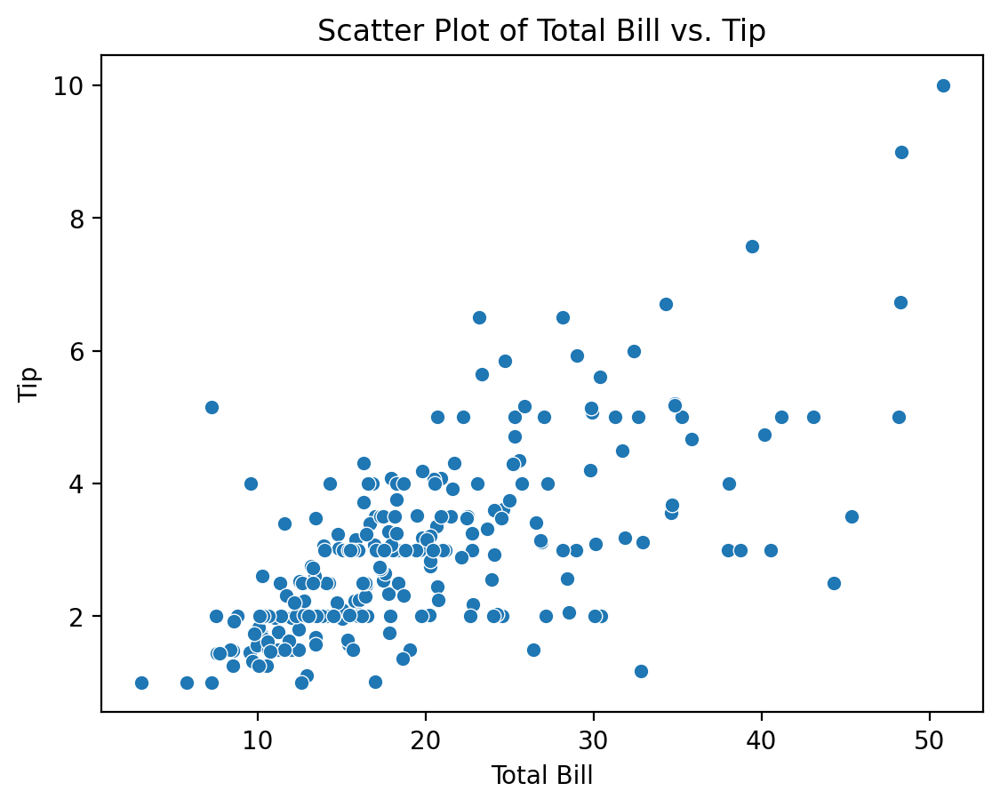
In this example, we use the tips dataset (which is built into Seaborn) to create a scatter plot that shows the relationship between the total bill and the tip amount.
15.2.3 Customizing Visualizations with Seaborn
Seaborn allows extensive customization of plot aesthetics to make visualizations more informative and appealing. You can easily modify colors, markers, and styles.
Example: Customizing a Scatter Plot
# Custom scatter plot with color and marker variations
sns.scatterplot(x='total_bill', y='tip', hue='sex', style='smoker', size='size', data=tips)
plt.title('Customized Scatter Plot of Total Bill vs. Tip')
plt.xlabel('Total Bill')
plt.ylabel('Tip')
plt.show()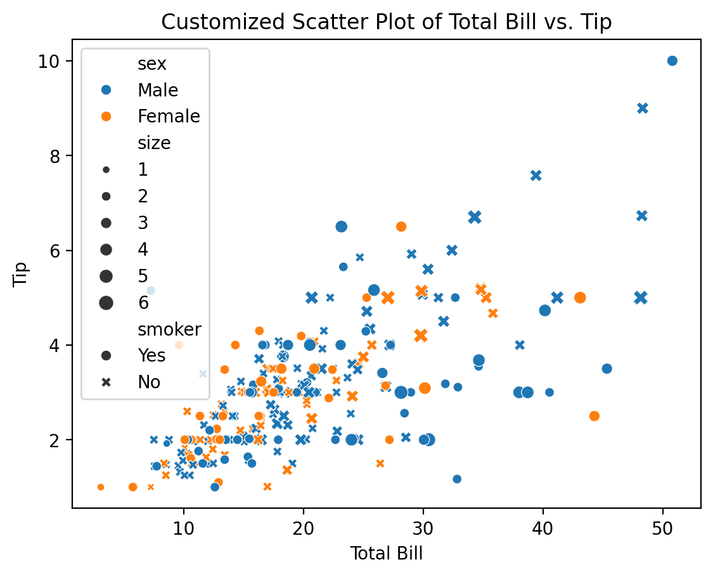
Here, the scatter plot is customized to differentiate data points based on additional variables using color (hue), marker style (style), and size (size). This makes it easier to visualize relationships between multiple variables in a single plot.
15.2.4 Visualizing Distributions
Understanding the distribution of data is crucial in statistical analysis. Seaborn offers several functions specifically for visualizing distributions, such as histograms, KDE plots, and box plots.
Example: Creating a Histogram and KDE Plot
# Histogram and KDE plot for total bill
sns.histplot(tips['total_bill'], kde=True, color='blue')
plt.title('Distribution of Total Bill with Histogram and KDE')
plt.xlabel('Total Bill')
plt.ylabel('Frequency')
plt.show()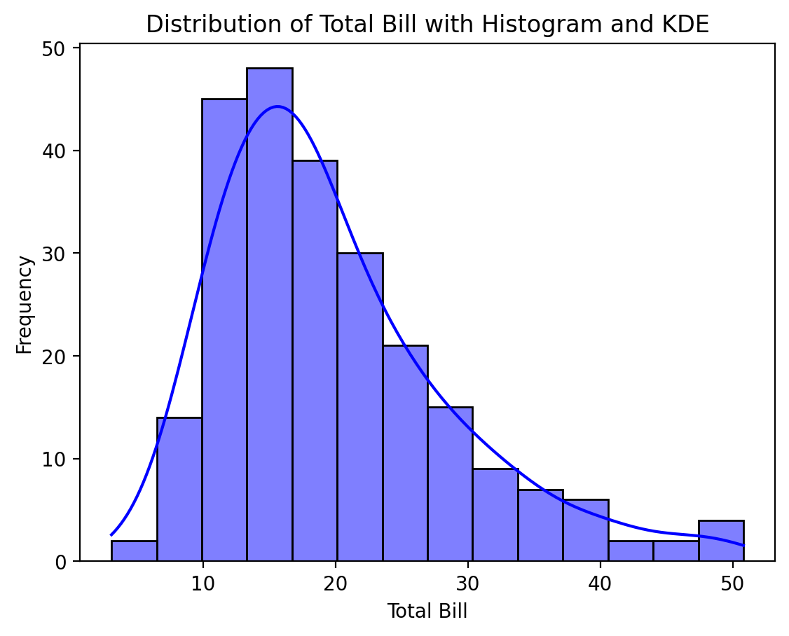
In this example, we create a histogram of the total_bill variable with an overlaid Kernel Density Estimate (KDE), which provides a smoothed curve representing the distribution.
15.2.5 Creating Categorical Plots
Seaborn excels in creating categorical plots that help analyze the relationship between categorical data and numerical data. The most common types include bar plots, box plots, and violin plots.
Example: Bar Plot
# Bar plot showing the average tip amount by day
sns.barplot(x='day', y='tip', data=tips, ci='sd', palette='viridis')
plt.title('Average Tip by Day')
plt.xlabel('Day')
plt.ylabel('Average Tip')
plt.show()C:\Users\Joshua_Patrick\AppData\Local\Temp\ipykernel_74992\690395935.py:2: FutureWarning:
The `ci` parameter is deprecated. Use `errorbar='sd'` for the same effect.
sns.barplot(x='day', y='tip', data=tips, ci='sd', palette='viridis')
C:\Users\Joshua_Patrick\AppData\Local\Temp\ipykernel_74992\690395935.py:2: FutureWarning:
Passing `palette` without assigning `hue` is deprecated and will be removed in v0.14.0. Assign the `x` variable to `hue` and set `legend=False` for the same effect.
sns.barplot(x='day', y='tip', data=tips, ci='sd', palette='viridis')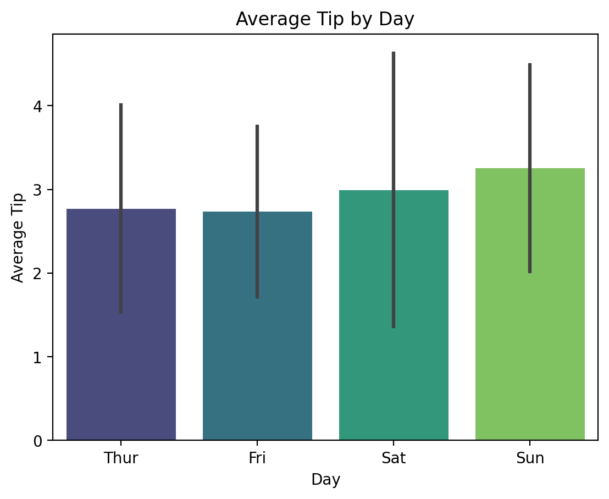
This bar plot displays the average tip amount for each day of the week, using error bars to indicate the standard deviation. Seaborn’s color palettes, like viridis, enhance the plot’s visual appeal.
Example: Box Plot
# Box plot showing the distribution of total bill by day
sns.boxplot(x='day', y='total_bill', hue='smoker', data=tips, palette='Set2')
plt.title('Box Plot of Total Bill by Day')
plt.xlabel('Day')
plt.ylabel('Total Bill')
plt.show()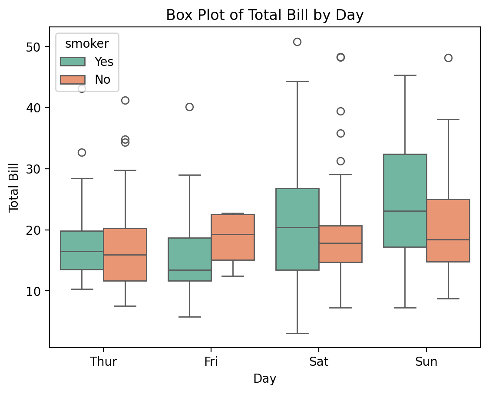
The box plot provides insights into the distribution of the total_bill by day, highlighting the median, interquartile range (IQR), and potential outliers. The hue parameter adds another layer to the plot, differentiating between smokers and non-smokers.
15.2.6 Pair Plots for Multivariate Analysis
Pair plots are useful for visualizing relationships between multiple variables at once. They create a grid of scatter plots for each pair of variables and display histograms for individual variable distributions.
Example: Pair Plot
# Creating a pair plot of the tips dataset
sns.pairplot(tips, hue='sex', palette='coolwarm')
plt.suptitle('Pair Plot of the Tips Dataset', y=1.02)
plt.show()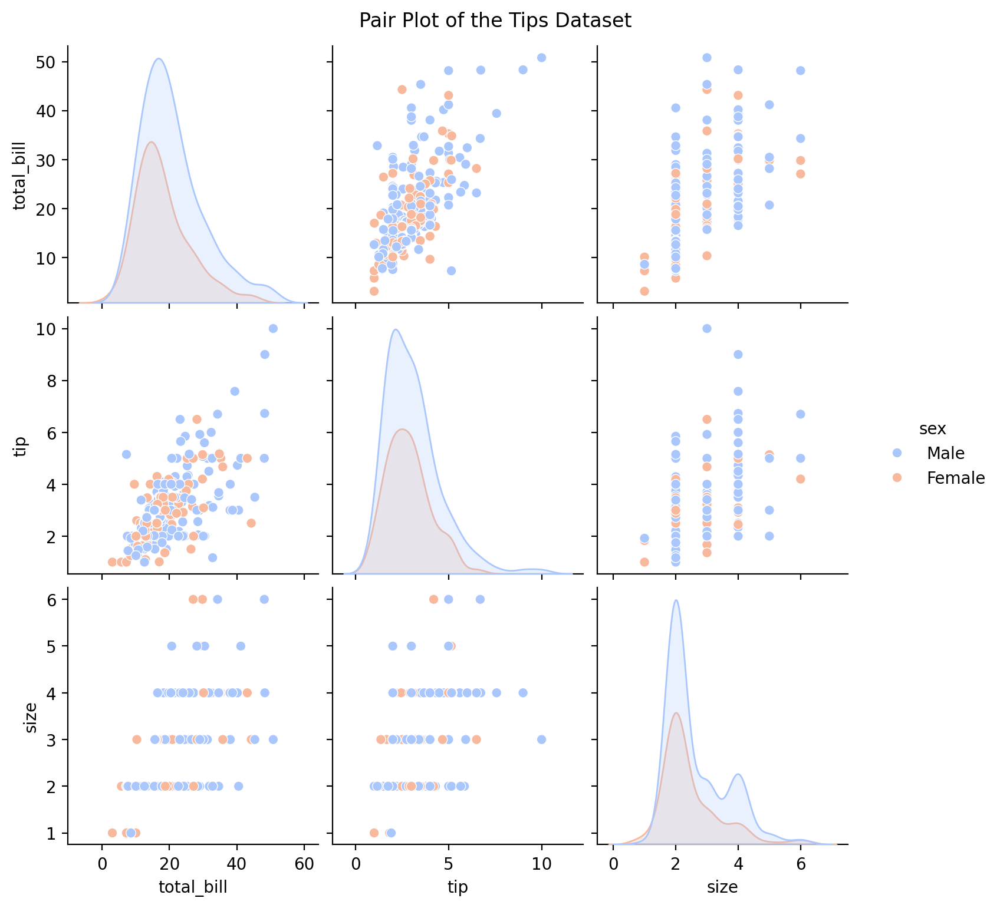
In this example, the pair plot provides a comprehensive view of pairwise relationships between all numerical variables in the dataset, with color-coded distinctions based on the sex variable.
15.2.7 Heatmaps for Correlation Analysis
Heatmaps are an effective way to visualize the correlation matrix of numerical data, showing how strongly pairs of variables are related.
Example: Creating a Heatmap
# Correlation heatmap for the tips dataset
corr = tips.corr(numeric_only = True)
sns.heatmap(corr, annot=True, cmap='coolwarm', linewidths=0.5)
plt.title('Correlation Heatmap of Tips Dataset')
plt.show()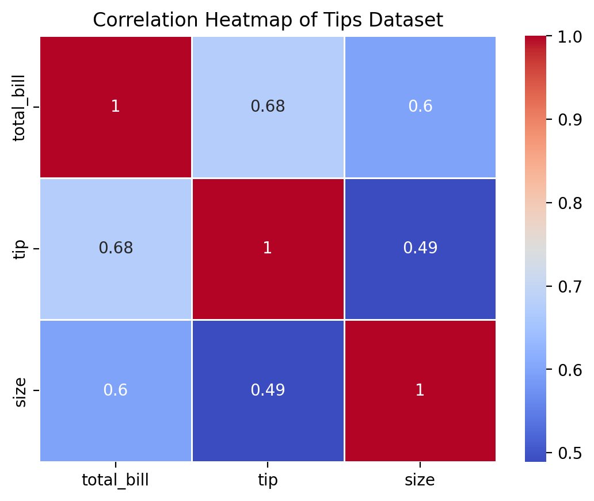
The heatmap in this example displays the correlation coefficients between variables in the tips dataset, with color intensity indicating the strength of the correlation. The annot=True parameter ensures that the correlation values are displayed on the heatmap.
15.2.8 Customizing Seaborn Themes
Seaborn comes with several built-in themes to enhance the appearance of plots, making it easy to change the overall look with minimal code.
Example: Applying a Different Theme
# Set a Seaborn style for all plots
sns.set_style('whitegrid')
# Creating a box plot with the new style
sns.boxplot(x='day', y='total_bill', data=tips, palette='pastel')
plt.title('Box Plot with Whitegrid Theme')
plt.xlabel('Day')
plt.ylabel('Total Bill')
plt.show()C:\Users\Joshua_Patrick\AppData\Local\Temp\ipykernel_74992\3431770401.py:5: FutureWarning:
Passing `palette` without assigning `hue` is deprecated and will be removed in v0.14.0. Assign the `x` variable to `hue` and set `legend=False` for the same effect.
sns.boxplot(x='day', y='total_bill', data=tips, palette='pastel')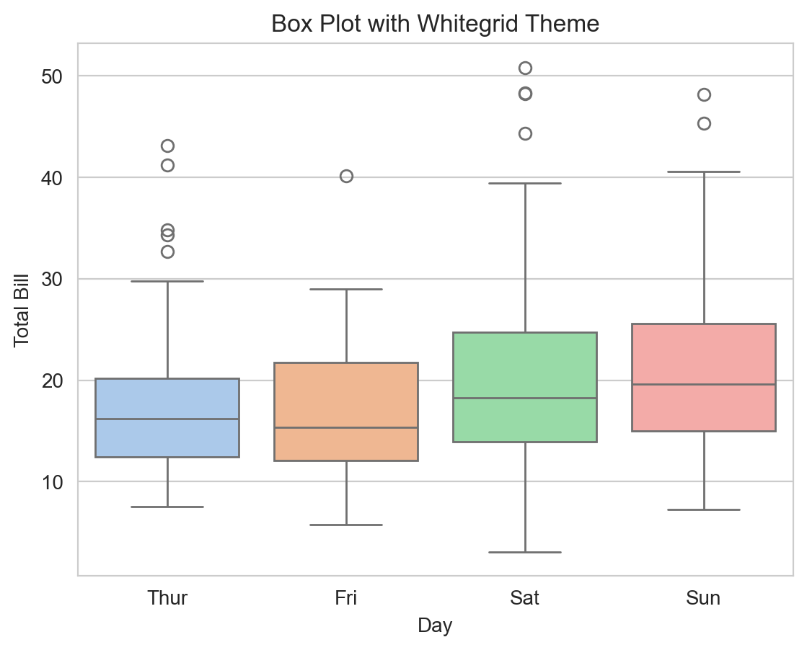
In this example, the whitegrid style adds grid lines to the plot background, which can help in analyzing data points more effectively.
15.2.9 Combining Seaborn with Matplotlib
Although Seaborn provides a high-level interface for creating plots, it is often beneficial to use Matplotlib functions for further customization.
Example: Combining Seaborn and Matplotlib for Plot Customization
# Creating a violin plot with Seaborn
sns.violinplot(x='day', y='total_bill', data=tips, inner='quartile', palette='Set3')
# Customizing with Matplotlib
plt.axhline(y=20, color='red', linestyle='--') # Add a reference line
plt.title('Violin Plot with Custom Reference Line')
plt.xlabel('Day')
plt.ylabel('Total Bill')
plt.show()C:\Users\Joshua_Patrick\AppData\Local\Temp\ipykernel_74992\122318432.py:2: FutureWarning:
Passing `palette` without assigning `hue` is deprecated and will be removed in v0.14.0. Assign the `x` variable to `hue` and set `legend=False` for the same effect.
sns.violinplot(x='day', y='total_bill', data=tips, inner='quartile', palette='Set3')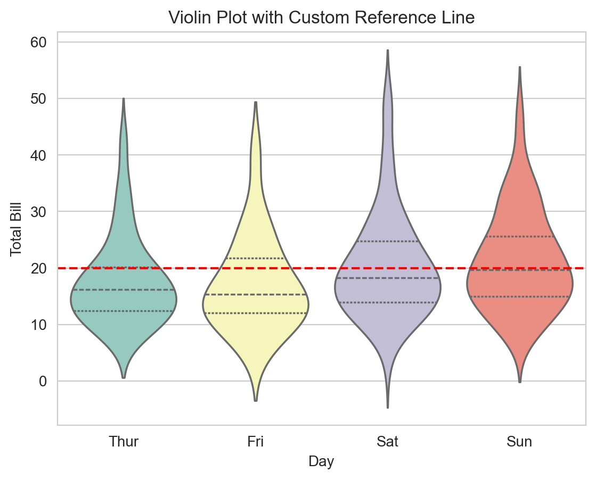
In this example, a Seaborn violin plot is enhanced with a Matplotlib horizontal line, illustrating the synergy between the two libraries for creating complex visualizations.
15.2.10 Advantages of Using Seaborn
- Simplified Syntax: Seaborn’s API is intuitive and reduces the code complexity for creating statistical graphics.
- Built-in Themes: It offers aesthetically pleasing color palettes and themes that enhance the visual appeal.
- Integration with Pandas: Seamlessly works with Pandas DataFrames, making data manipulation and visualization straightforward.
- Statistical Visualization: Designed specifically for statistical plotting, providing functions that directly interpret and visualize statistical relationships.
15.2.11 Limitations and Considerations
- Customization Limitations: Although Seaborn is powerful, certain highly specific customizations may require falling back on Matplotlib.
- Learning Curve: Requires familiarity with data structures like DataFrames and understanding of statistical concepts for full utilization.
15.3 Introduction to ggplot (plotnine)
The ggplot library in Python, made accessible through the plotnine package, is inspired by the grammar of graphics principles introduced by Leland Wilkinson. This approach allows data visualizations to be built by combining independent layers, where each layer adds a new element to the plot. This methodology enables the creation of highly customizable and aesthetically pleasing plots with a structured syntax that emphasizes clarity and reproducibility.
15.3.1 The Grammar of Graphics
The grammar of graphics is a theoretical framework that breaks down the process of constructing data visualizations into independent components:
- Data: The dataset being visualized.
- Aesthetics (aes): The mapping of data variables to visual properties, such as position, color, and size.
- Geometries (geoms): The visual elements that represent data points, such as lines, bars, points, or histograms.
- Facets: The ability to split data into subplots for comparison.
- Statistics: Transformation or summary of data to highlight patterns.
- Scales: Controls the mapping between data values and their visual representation.
- Coordinate systems: Defines how data points are placed in a plot.
Understanding this layered approach helps in constructing meaningful and well-organized visualizations.
15.3.2 Creating a Basic Plot with ggplot
To use ggplot in Python, you will need to install the plotnine package if you haven’t already:
!pip install plotnineNow, let’s begin by creating a basic line plot using plotnine. We will use a simple dataset to demonstrate how to create a visualization using the ggplot syntax.
import pandas as pd
from plotnine import ggplot, aes, geom_line, ggtitle
# Creating a dataset
data = pd.DataFrame({
'x': [1, 2, 3, 4, 5],
'y': [1, 4, 9, 16, 25]
})
# Creating a basic line plot
(ggplot(data, aes(x='x', y='y')) +
geom_line() +
ggtitle('Basic Line Plot with ggplot'))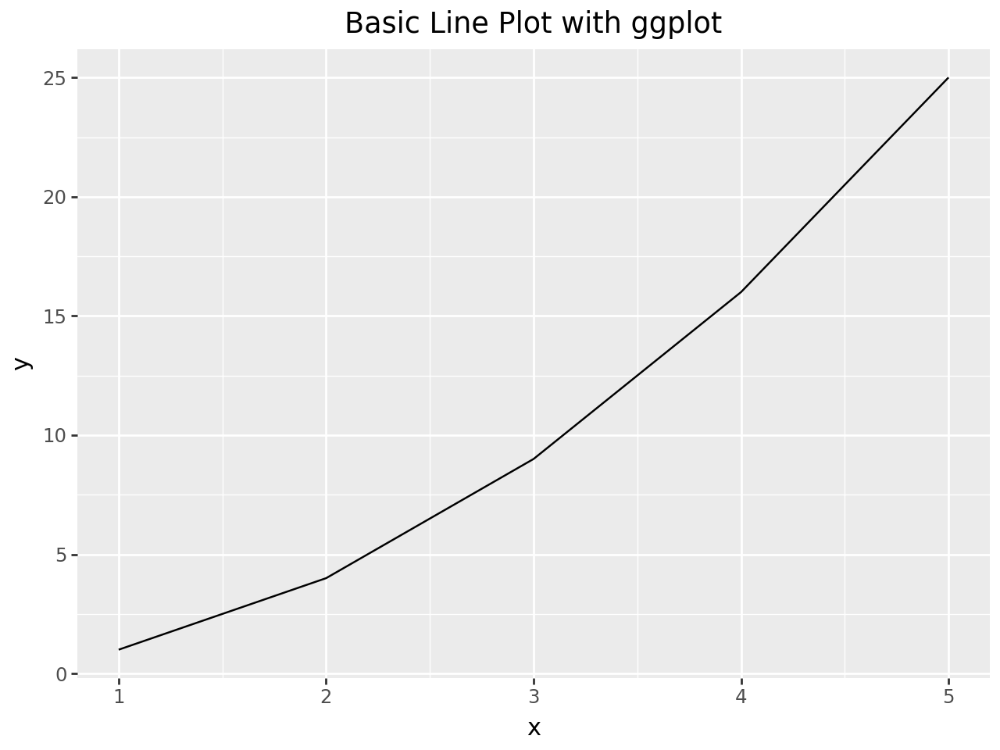
In this example, we define the dataset and specify the aesthetics using aes(), which maps the x and y variables to the axes of the plot. The geom_line() function adds a line graph layer to the plot. The title is set using ggtitle().
15.3.3 Enhancing Visualizations with Layers
One of the strengths of ggplot is the ability to add multiple layers to a plot, allowing you to build more informative visualizations.
Example: Adding Points to a Line Plot
from plotnine import geom_point, xlab, ylab
# Adding a layer of points to the line plot
(ggplot(data, aes(x='x', y='y')) +
geom_line(color='blue') +
geom_point(color='red', size=3) +
ggtitle('Enhanced Line Plot with Points') +
xlab('X-axis') +
ylab('Y-axis'))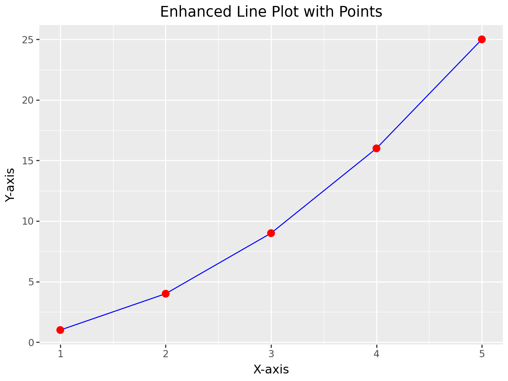
Here, we use the geom_point() function to overlay points on the existing line plot. This combination helps highlight individual data points while still showing the overall trend.
15.3.4 Common Plot Types in ggplot
ggplot supports a wide variety of plot types, each suited for different types of data analysis:
- Scatter Plots: Used to visualize relationships between two continuous variables.
- Bar Charts: Ideal for comparing categorical data.
- Histograms: Useful for visualizing the distribution of a single variable.
- Box Plots: Helps to visualize the spread, central tendency, and outliers in data.
Example: Creating a Scatter Plot
# Creating a dataset for the scatter plot
scatter_data = pd.DataFrame({
'x': [5, 7, 8, 5, 9, 7],
'y': [3, 8, 4, 7, 2, 5]
})
# Scatter plot with ggplot
(ggplot(scatter_data, aes(x='x', y='y')) +
geom_point(color='green', size=4) +
ggtitle('Scatter Plot Example') +
xlab('X-axis Label') +
ylab('Y-axis Label'))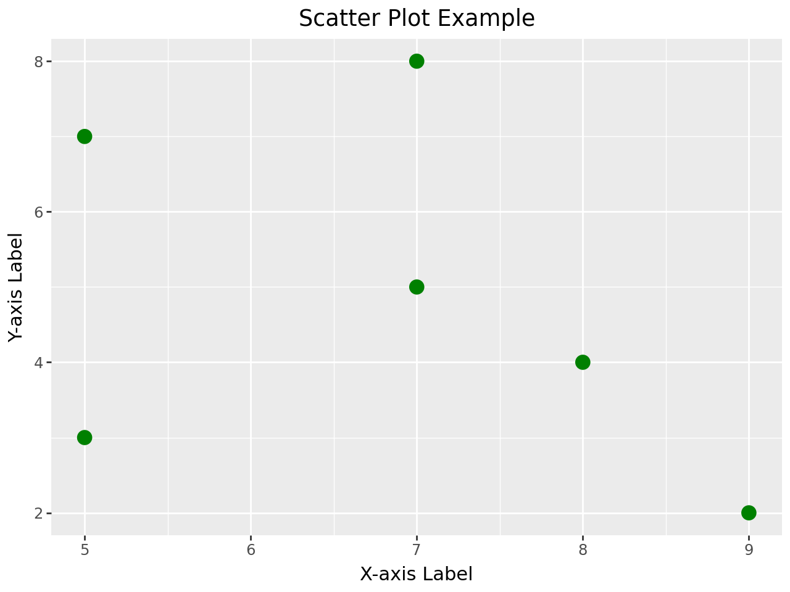
In this example, the scatter plot is created using geom_point(), with customizations for point color and size.
15.3.5 Faceting for Multi-Plot Layouts
Faceting in ggplot allows you to create multiple subplots within a single plot, enabling easy comparison of different subsets of the data. Faceting can be done by rows, columns, or both.
Example: Faceting with a Categorical Variable
from plotnine import facet_wrap
# Creating a dataset for faceting
facet_data = pd.DataFrame({
'x': [1, 2, 3, 4, 5, 1, 2, 3, 4, 5],
'y': [5, 7, 8, 9, 10, 3, 4, 5, 6, 7],
'category': ['A', 'A', 'A', 'A', 'A', 'B', 'B', 'B', 'B', 'B']
})
# Facet plot with ggplot
(ggplot(facet_data, aes(x='x', y='y')) +
geom_line() +
facet_wrap('~category') +
ggtitle('Faceted Line Plot by Category') +
xlab('X-axis') +
ylab('Y-axis'))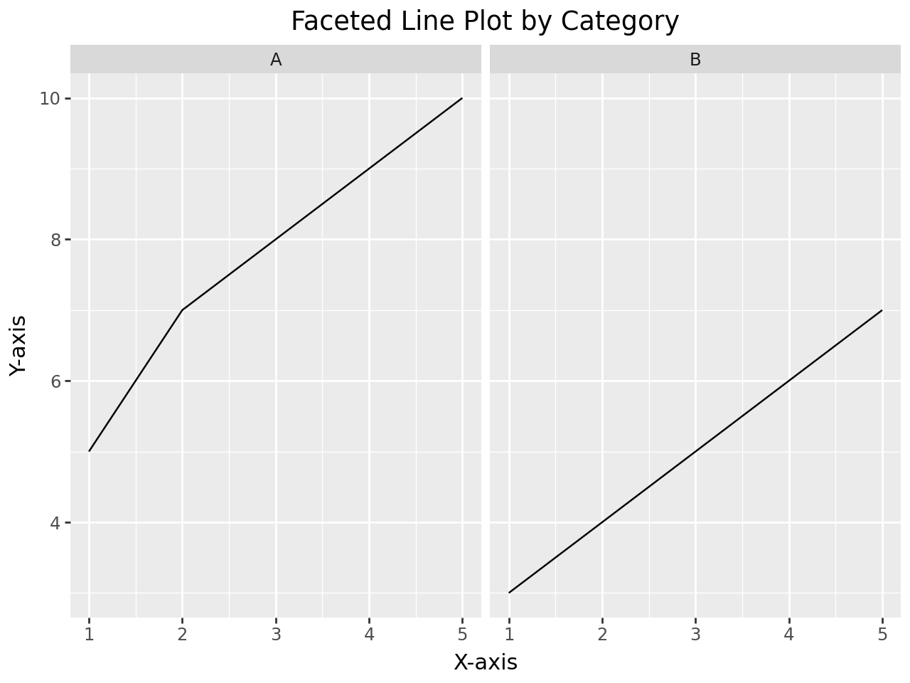
This example uses facet_wrap() to create separate plots for each category in the dataset, allowing for a clear visual comparison between the groups.
15.3.6 Customizing Aesthetics and Themes
Customization in ggplot extends beyond simple color and size adjustments. The library allows for fine-tuning the plot’s appearance through themes, which can dramatically change the look and feel of your visualizations.
Example: Using a Different Theme
from plotnine import theme_minimal, theme_bw
# Applying a minimal theme to a scatter plot
(ggplot(scatter_data, aes(x='x', y='y')) +
geom_point(color='blue', size=4) +
ggtitle('Scatter Plot with Minimal Theme') +
xlab('X-axis Label') +
ylab('Y-axis Label') +
theme_minimal())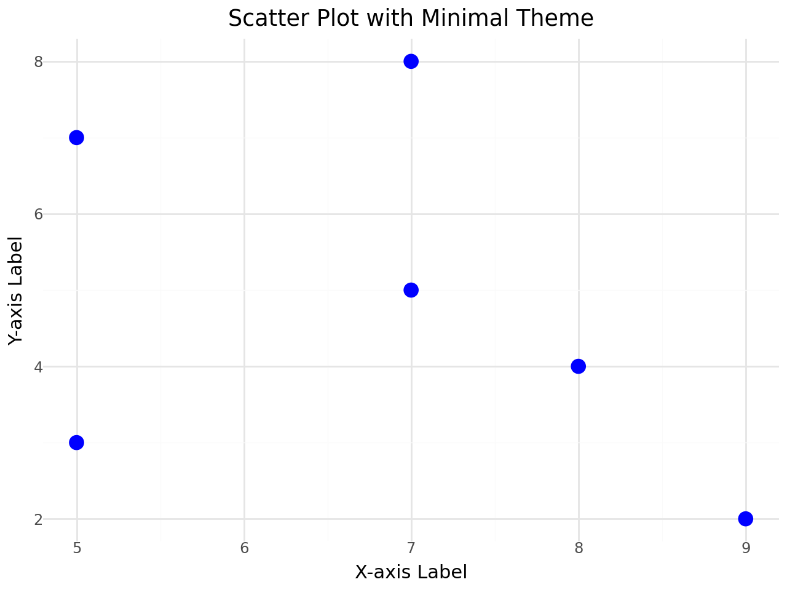
In this example, the theme_minimal() function is applied to give the plot a clean and modern look, with minimal grid lines and axis labels.
15.3.7 Statistical Transformations
ggplot in Python supports built-in statistical transformations to highlight trends and patterns within the data. These transformations can automatically compute summaries like smoothing lines or histograms.
Example: Adding a Smoothing Line to a Scatter Plot
from plotnine import geom_smooth
# Scatter plot with a smoothing line
(ggplot(scatter_data, aes(x='x', y='y')) +
geom_point(color='red', size=3) +
geom_smooth(method='lm', color='blue') +
ggtitle('Scatter Plot with Smoothing Line') +
xlab('X-axis Label') +
ylab('Y-axis Label'))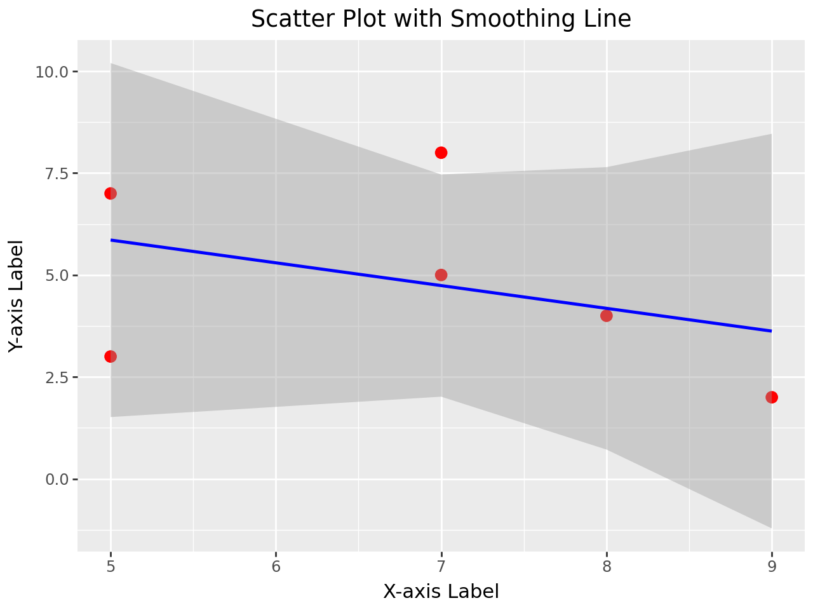
Here, geom_smooth() adds a linear regression line to the scatter plot, showing the trend in the data points.
15.3.8 Advantages of Using ggplot
- Consistency: The grammar of graphics approach ensures that the process of building plots is systematic and repeatable.
- Customization: Every aspect of the plot can be adjusted to suit specific needs or aesthetic preferences.
- Layered Design: Allows for easy addition and modification of plot components without altering the underlying structure.
- Built-In Statistical Tools: Supports automatic statistical transformations to help identify patterns in the data.
15.3.9 Limitations and Considerations
While ggplot offers great flexibility and aesthetic appeal, there are some considerations to keep in mind:
- Performance: Rendering complex visualizations with large datasets can be slower compared to other libraries.
- Learning Curve: Requires a solid understanding of the grammar of graphics concepts, which might be challenging for beginners.
- Dependencies: As a port of ggplot2 from R, some features might differ or be less developed than in the R version.
15.4 Exercises
Exercise 1: Working with Matplotlib - Creating Basic Line Plots
Using Matplotlib, create a line plot of the function \(f(x) = x^2\) for \(x\) values ranging from -10 to 10. Customize the plot by adding labels to the axes, a title, and a grid.
Modify your plot to change the line color to red and use a dashed line style. Add circular markers to each data point.
Exercise 2: Working with Matplotlib - Scatter Plot Customization
Generate a scatter plot using the following data:
- \(x = [2, 4, 6, 8, 10]\)
- \(y = [1, 4, 9, 16, 25]\)
Customize the scatter plot by using triangle markers, coloring the points green, and increasing the marker size. Label the axes and add a title to the plot.
Exercise 3: Working with Matplotlib - Creating Subplots
Create a figure with two subplots arranged vertically:
The first subplot should be a line plot of \(f(x) = x^3\) for \(x\) values from -5 to 5.
The second subplot should be a scatter plot of the points \((-3, -27)\), \((-2, -8)\), \((0, 0)\), \((2, 8)\), and \((3, 27)\).
Ensure that each subplot has a title and labeled axes, and adjust the spacing between the plots for better readability.
Exercise 4: Advanced Data Visualization with Seaborn - Analyzing Data Distributions
Load the built-in
tipsdataset from Seaborn. Create a histogram of thetotal_billvariable with a KDE (Kernel Density Estimate) overlay. Customize the color of the histogram and KDE line.Interpret the resulting plot, describing any noticeable patterns in the distribution of the
total_billvalues.
Exercise 5: Advanced Data Visualization with Seaborn - Comparing Categorical Data
Using the
tipsdataset, create a box plot to visualize the distribution of tips received by day of the week. Differentiate between smokers and non-smokers using thehueparameter.Analyze the box plot to determine on which day the highest median tip amount is given and whether smokers tend to tip more than non-smokers.
Exercise 6: Advanced Data Visualization with Seaborn - Correlation Analysis with Heatmaps
Generate a heatmap showing the correlation matrix of the numerical variables in the
tipsdataset. Use thecoolwarmcolor palette and display the correlation values on the heatmap.Based on the heatmap, identify which two variables have the strongest correlation and describe their relationship.
Exercise 7: Exploring ggplot with plotnine - Basic Line Plot with ggplot
Using the
plotninepackage, create a basic line plot of the function \(g(x) = \sin(x)\) for \(x\) values ranging from 0 to \(2\pi\). Add appropriate labels to the axes and a title to the plot.Enhance the plot by adding points at each integer value of \(x\) with different color markers.
Exercise 8: Exploring ggplot with plotnine - Creating Faceted Plots
Create a dataset with two groups, “A” and “B”, and plot a faceted line plot using
ggplot. Plot the following data points:- Group A: \((1, 2)\), \((2, 4)\), \((3, 8)\), \((4, 16)\)
- Group B: \((1, 1)\), \((2, 2)\), \((3, 3)\), \((4, 4)\)
Use facetting to display each group’s plot in a separate subplot and ensure that both plots share the same x-axis and y-axis labels.
Exercise 9: Exploring ggplot with plotnine - Applying Themes and Aesthetic Modifications
Create a scatter plot using
ggplotwith a dataset of your choice. Apply thetheme_minimalstyle and modify the aesthetics by changing the point color, size, and adding a smooth line to represent the trend in the data.Save your plot as a PNG file with a resolution of 300 dpi.